Вызов окна картотеки заказов осуществляется из главного окна программы "Заказы и покупатели - Картотека заказов". Перед началом работы с заказами необходимо нажать кнопку загрузки/обновления заказов с сервера. Ввиду того, что заказов может быть достаточно много, нет смысла хранить их все в картотеке в локальной базе магазина, это будет замедлять работу. Поэтому, открыв окно "Параметры получения заказов с сервера", можно задать настройки-ограничения по загрузке заказов с сервера:
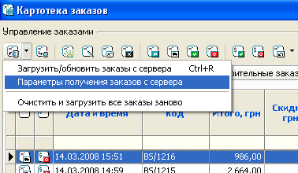
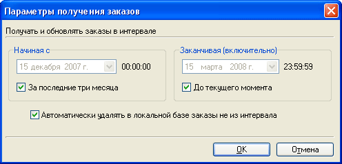
По умолчанию при отображении заказы сортируются по времени поступления. Для изменения порядка сортировки необходимо нажать на название той или иной колонки. Помимо статусов заказа "Принят к исполнению", "В процессе доставки", "Выполнен", "Аннулирован", "Удалить заказ", возможно назначение статуса оплаты: "Оплата принята", "Оплата не принята". После изменения статусов заказов данные об этих изменениях необходимо передать на сервер - кнопка "Отправить данные на сервер". Также имеется возможность прочитать и отредактировать внутреннее примечание к заказу, которое помогает внести уточнения к заказу. Данное уточнение будет доступно и менеджерам, которые обрабатывают заказы через веб-интерфейс.
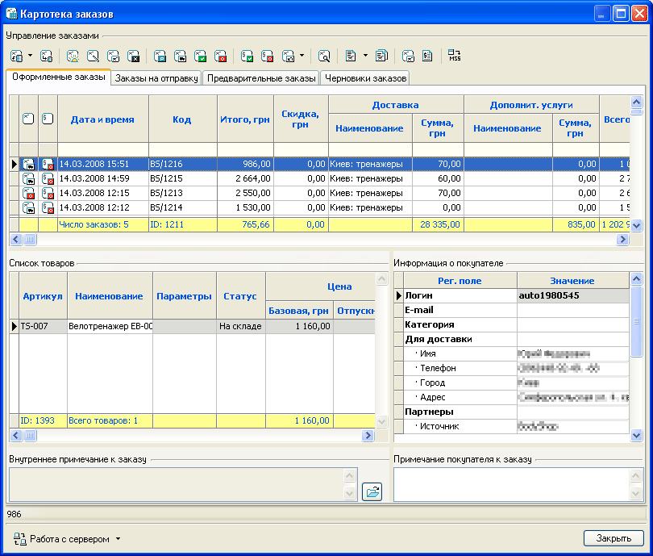
Начиная с версии Melbis Shop 5.4.0, появилась новая возможность добавления и редактирования заказов непосредственно в локальной части программы, а затем отправки их на сервер. В верхней части списка заказов, теперь находятся закладки "Оформленные заказы", "Заказы на отправку", "Предварительные заказы" и "Черновики заказов", которые позволяют переключаться между соответствующими списками заказов. После редактирования заказа, он может быть помещен в любую папку из "Заказы на отправку", "Предварительные заказы" и "Черновики заказов". Поскольку в момент составления заказа доступ к сети Интернет может отсутствовать, то все новые и редакционные копии заказов сохраняются в папке "Заказы на отправку", а после этого передаются на сервер. Для отправки подготовленных заказов на сервер необходимо перейти на закладку "Заказы на отправку" и нажать на кнопку "Отправить данные на сервер". Все заказы из любых папок хранятся в локальной базе данных, поэтому при закрытии программы она не пропадают.
При редактировании заказа, необходимо заполнить регистрационные поля покупателя, выбрать товары заказа, а также указать другие параметры заказа:
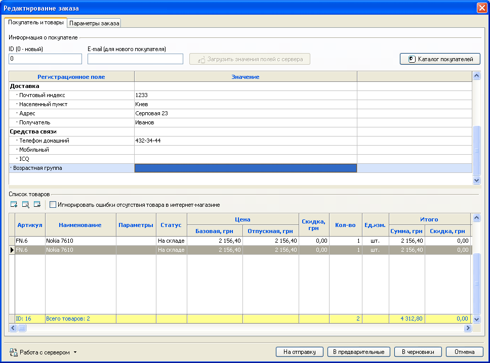
Если покупатель Вам известен, то можно указать его ID в вашем магазине (можно найти, используя Каталог покупателей), а затем нажать кнопку "Загрузить значения полей с сервера". Следует понимать, что каждый заказ с одним и тем же покупателем хранит независимые значения регистрационных полей покупателя от других заказов.
Список товаров формируется путем добавления товара в него (по одному) и указанием его свойств: цены, скидки, кол-ва и т.п.
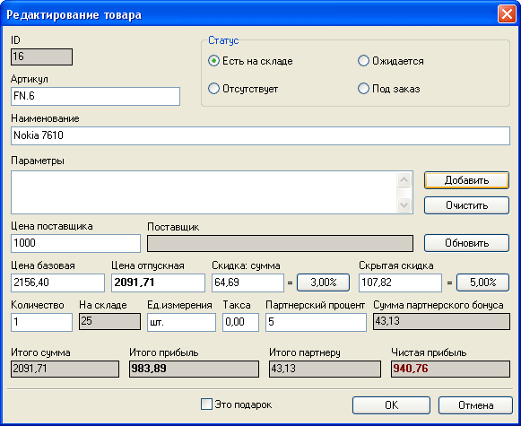
Опция "Игнорировать ошибки отсутствия товара в интернет-магазине" позволяет оформить заказ независимо от того, есть ли сейчас этот товар на складе и неравно ли поле количество нулю.
На следующей закладке "Параметры заказа", предоставляется возможность ввести и отредактировать условия доставки и оплаты, примечания к заказу и остальные поля:
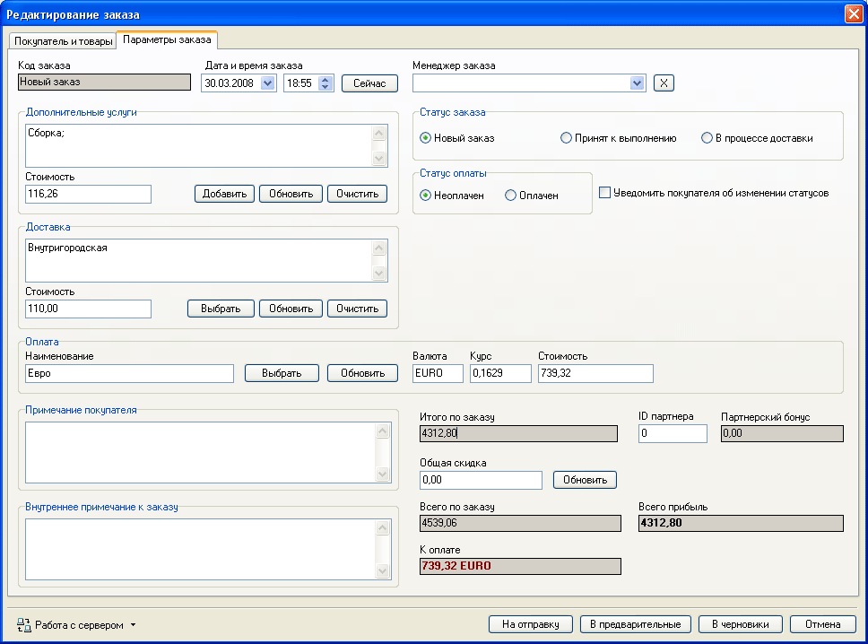
Другие возможности картотеки заказов:
- нажатием кнопки
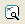
вызвать окно поиска/фильтрации заказов по всевозможным критериям:
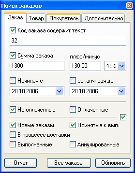
- нажатием кнопки в главном окне "Картотеки заков" или нажатием кнопки "Отчет" в окне поиска заказов сформировать совокупный отчет для выбранных заказов. В базовой версии поставляется два отчета "Краткий" и "Подробный", однако Вам предоставляется возможность самостоятельно добавить свой и/или отредактировать имеющийся отчеты. Отчеты строятся на достаточно известной и популярной системе отчетов FastReport, которая имеет удобный интерфейс для построения всевозможных отчетов. Подробное описание редактора отчетов можно скачать с нашего сайта: http://www.melbis.com/download/FRManual.pdf
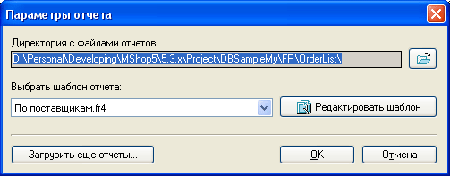
- нажатием кнопки просмотреть служебный отчет о выбранном заказе или отредактировать макет служебного отчета. Отчет содержит сведения о покупателе, выбранных им товарах, задействованных скидках, а также отдельно партнерские расчеты в соответсвии с партнерской программой:
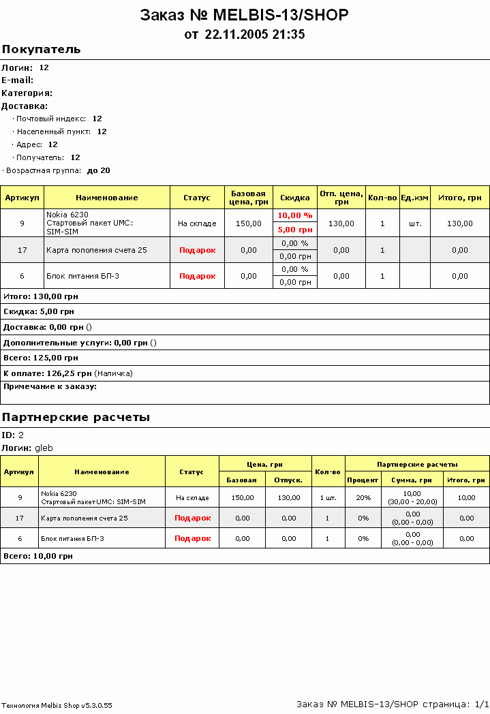
- Нажатием кнопки просмотреть и распечатать счет заказа. Необходимо отметить следующее: будет ли показан счет, или нет, зависит от опции "Paзpeшить oплaту cpaзу пocлe coвepшeния зaкaзa" в окне задания способов оплаты. Если эта опция отмечена, счет-фактура для оплаты заказа становится доступной покупателю сразу, в противном случае только после назначения заказу статуса "Принят к выполнению".
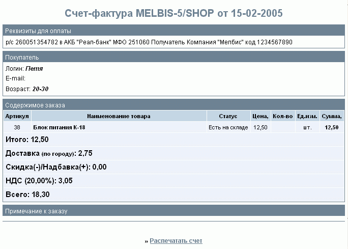
В счет-фактуре в поле "Реквизиты для оплаты" подставляются значения, указанные в поле "HTML-кoд для coвepшeния oплaты (вcтaвлeтcя в cчeт)" окна настроек "Способы оплаты". Реквизитами могут быть расчетный счет в банке или код для оплаты через электронные валюты.